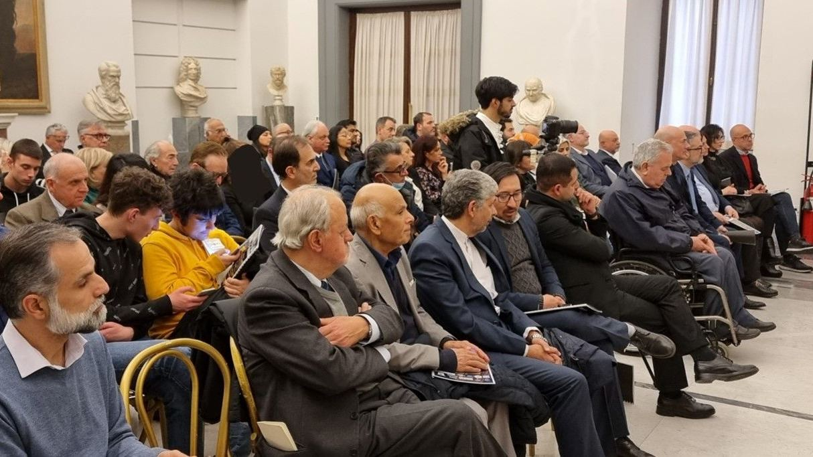
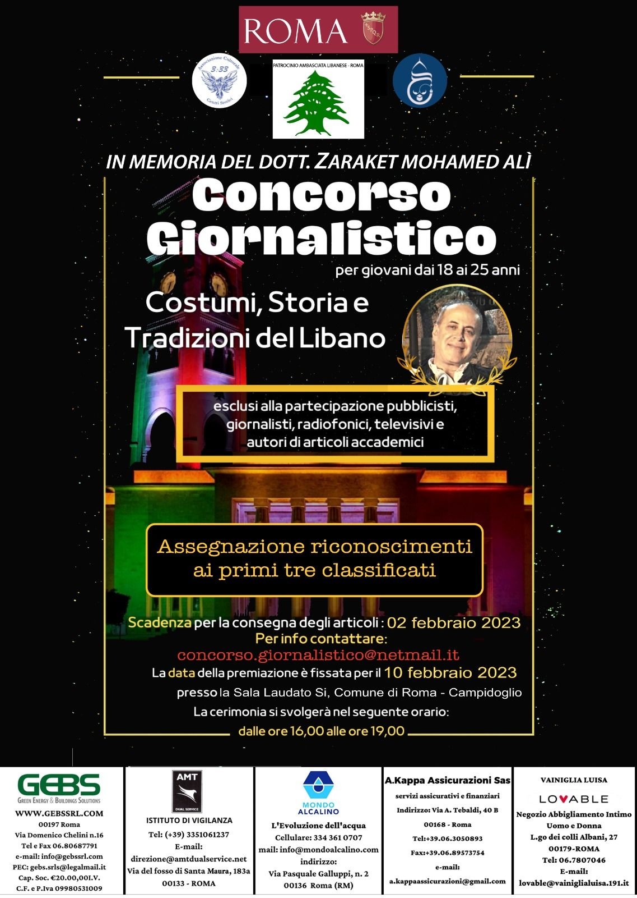
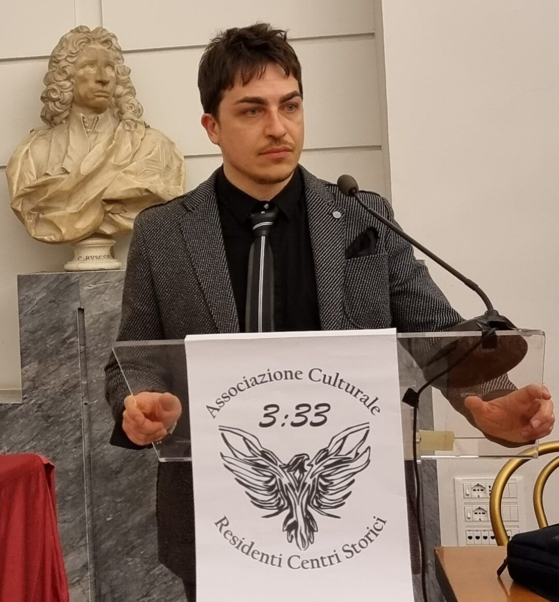
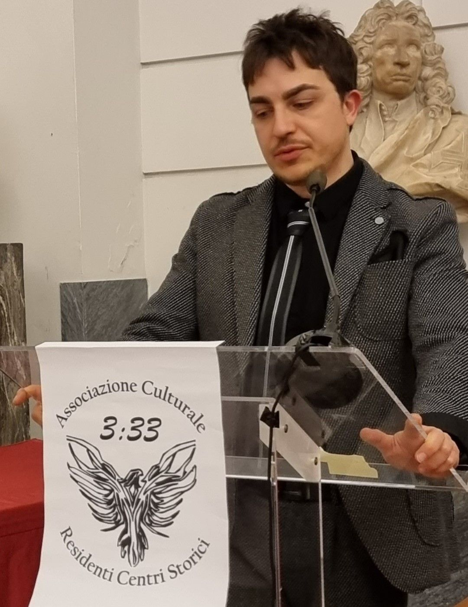

Il giorno 10 febbraio si è svolta la prima edizione del Concorso Giornalistico in memoria del Dott. Mohamed Alì Zaraket, eminente medico libanese operante in Italia, recentemente deceduto a Roma. Il concorso, rivolto a giovani dai 18 ai 25 anni che tramite un articolo giornalistico diffondono i valori, la cultura e la storia del Libano, ha avuto luogo presso la sala “Laudato Si” del Campidoglio, patrocinato da Roma Capitale e dall’Ambasciata del Libano, e ha visto la partecipazione di oltre settanta invitati. L’evento è stato organizzato dall’Associazione Culturale dei Residenti nei Centri Storici “3:33”, in collaborazione con il Movimento Liberale Solidale e il quotidiano Daily Muslim.
Tra gli illustri relatori presenti all’evento si annoverano: l’Onorevole Antonella Melito, Consigliera di Roma Capitale; Monsignor Youhonna Rafic El Warchia, Procuratore Generale del Patriarcato Maronita presso la Santa Sede e Rettore del Pontificio Collegio Maronita; l’Imam Damiano Abbas Di Palma, Presidente dell’Associazione Islamica Imam Mahdi; la Dottoressa Samira Zaraket, sorella del defunto Dott. Zaraket e giornalista professionista.
La collaborazione tra diverse associazioni e un’importante testata giornalistica ha consentito di divulgare l’impegno politico, sociale e culturale di un professionista e la sua personale visione di una geopolitica basata sulla pace, sulla convivenza tra culture e religioni, tra individui di diverse origini e tradizioni diverse. Un evento che ha messo in evidenza la possibilità concreta di interazione tra mondi solo apparentemente distanti e tra società accomunate dalla presenza di un unico mare, seguendo gli insegnamenti del Dott. Zaraket per avvicinare il Libano – sua terra natale – all’Italia – sua terra d’adozione.
Il Concorso ha costituito il primo impegno internazionale dell’Associazione 3:33 dalla sua recente fondazione e ha offerto l’opportunità di iniziare ad esplorare tematiche riguardanti le complesse interazioni tra politica, cultura e territorio.
Il presidente di 3:33, Dr. Mirko Rocci, ha partecipato all’evento ed ha avuto l’onore di premiare la terza classificata al concorso giornalistico, Melissa Frezzini, brillante studentessa di una scuola media superiore.
L’adesione dell’Associazione 3:33, in linea con i propri scopi statutari, ha permesso di identificare alcune delle questioni meritevoli di ulteriori approfondimenti al fine di concretizzare gli ideali di condivisione e collaborazione in una prospettiva cosmopolita della società italiana.
Per promuovere attivamente i valori della solidarietà, l’Associazione 3:33 prevede di istituire un centro studi per valutare le diverse proposte e un laboratorio delle menti, al fine di suggerire proposte basate sull’insegnamento del Dott. Zaraket. Come affermato nel corso del Convegno dal Dott. Mirko Rocci, “L’evento di ieri ha rappresentato un’opportunità unica di incontro e scambio di idee tra diverse realtà, culture e religioni, nel rispetto dell’identità e della tradizione, consentendo di agire sinergicamente come protagonisti del nostro futuro”.


